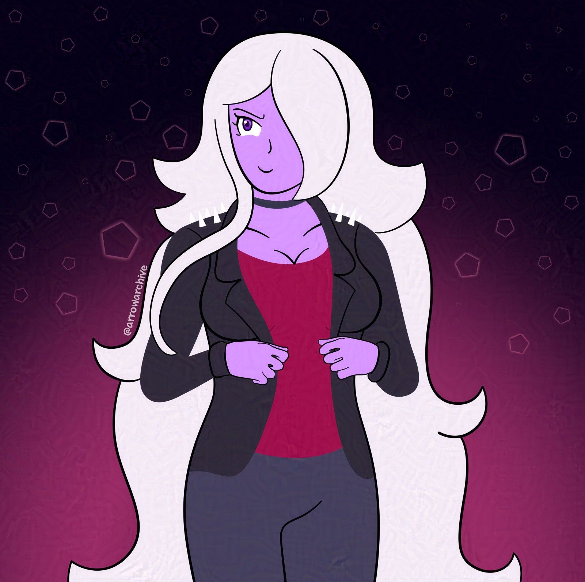

Shadow's Jacket
I drew a character in a new outfit. Why? because I wanted to. I haven’t drawn Shadow since September, and I drew her with a new outfit in mind.
I imagined her wearing a leather/pleather jacket with spikes on the shoulders, a black choker, and a red shirt. She pulls it off, but I like her main outfit too much to make this her default. I may consider removing the long strip of hair on her right shoulder, but it’s because I want to simplify her design and that strand of hair is inconvenient.
I’ve drawn less this month, and this website was the reason why. I did a lot of coding this month, and most of my drawings were for this page. I didn't say anything about it because I wanted to keep it secret.